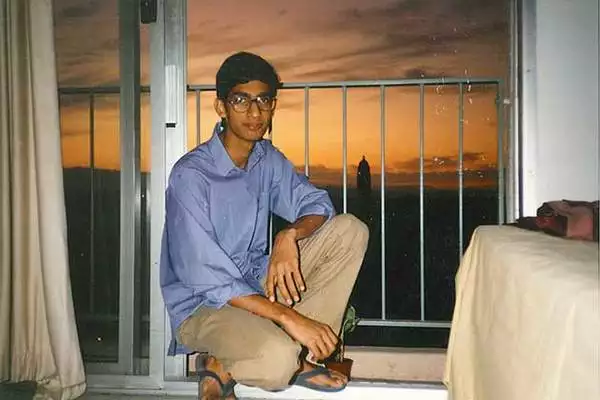

Sundar Pichai - CEO of Google
Introduction:-
Sundar Pichai (born June 10, 1972, Madras [now Chennai],
Tamil Nadu, India) Indian-born American executive
who was CEO of both Google,
Inc. (2015– ), and its holding company, Alphabet Inc. (2019– ).
As a boy growing up in Madras, Pichai slept with his brother in the living room of the cramped family home,
but his father, an electrical engineer at the British multinational GEC, saw that the boys received a good education.
At an early age Pichai displayed an interest in technology and an extraordinary memory, especially for telephone numbers.
After earning a degree in metallurgy (B.Tech., 1993) and a silver medal at the Indian Institute of Technology Kharagpur,
he was awarded a scholarship to study at Stanford University (M.S. in engineering and materials science, 1995).
He remained in the United States thereafter, working briefly for Applied Materials (a supplier of semiconductor materials)
and then earning an M.B.A. (2002) from the Wharton School of the University of Pennsylvania.

Following a short stint at the management consulting firm McKinsey & Co., Pichai joined Google in 2004 as the head
of product management and development. He initially worked on the Google Toolbar, which enabled those using the Microsoft
Internet Explorer and Mozilla Firefox Web browsers to easily access the Google search engine. Over the next few years,
he was directly involved in the development of Google’s own browser, Chrome, which was released to the public in 2008.
That same year Pichai was named vice president of product development, and he began to take a more-active public role.
By 2012 he was a senior vice president, and two years later he was made product chief over both Google and the
Android smartphone operating system.
Early Life:-
CEO Sundar Pichai is born in madras, Tamilnadu. His parents were Lakshmi, Regunatha. His father owns an electrical
component manufacturing plant. Pichai grew up in a two-bedroom apartment in Ashok Nagar, Chennai.
Pichai did his schooling in Jawahar Vidyalaya senior secondary school. A central board of secondary education school
in Ashok Nagar, Chennai. He completed his 12th standard from Vana Vani school at IIT madras. Sundar’s childhood life
was simple, lived in a modest house, and has shared a house with tenants. They slept on the living floor.
Pichai has a love
for reading. His childhood however made him get prepared for the future. Pichai graduated from IIT Kharagpur in
metallurgical engineering, later become CEO
Struggling to speak Hindi to topping some tests at the college to once
getting a C grade in one of the tests. Then, He moved to the US, He did MS from Stanford University in
material science and engineering. he further did an MBA from Wharton school of university Pennsylvania.


His dad, Regunatha Pichai was an electrical designer at General Electric Organization, GEC, a UK-based
modern aggregate. His mom, Lakshmi was a transcriber prior to having Sundar and his more youthful sibling.
Sundar Pichai experienced childhood in a two-room condo in Chennai.
He had never encountered the advantage
of staring at the TV or going by vehicle in his life as a youngster. Divide has a place with a lower working-class family.
His dad additionally had an electrical parts fabricating plant.
Individual life:-
Pichai's inclinations incorporate cricket and football. Divide Pichai wedded to a substance engineer
from Kota, Rajasthan, named Anjali Pichai, naturally introduced to a working-class family, who numerous days assume
a vital part in the entirety of his undertakings.
The couple met as cohorts and turned out to be old buddies when they
were in the primary year of their designing at the Indian Foundation of Innovation Kharagpur. The pair has two
youngsters and as of now lives in Straight Region San Francisco.
Education:-
Pichai was born in Tamil Nadu's Madurai city. His father, Regunatha Pichai, worked as an electrical engineer for the
British corporation GEC, and his mother, Lakshmi, was a stenographer. Additionally, his father owned a facility that made electrical components.
With a passion for science and technology and a desire to contribute to the field, he was able to gain admission to the prestigious
Indian Institute of Technology (IIT) Kharagpur. In 1993, he chose to pursue a BTech in Metallurgical Engineering. He met his wife, Anjali at IIT Kharagpur.
Sundar Pichai's silver award-winning scholarship, which allowed him to pursue his dream school at the prestigious Stanford
University, was a watershed moment in his education. He was eager to seek a Ph.D. from Stanford on a comparable topic
as soon as he finished his master's degree. Pichai went on to seek a Ph.D. degree, but eventually dropped out and began
his career as a Product Manager and Engineer in the field of Applied Materials.
Career:-
Divide delegated as an administration expert at McKinsey Organization and worked in designing and item the executives.
Later he joined Google in 2004 and sent off a free mail administration called Gmail. In Google, he drove the development
and item the executive's endeavours for a set-up of Google's client programming items.
He was liable for Google Chrome
operating system, Google Chrome as well as being generally answerable for Google Drive.
In 2007, he took over Gmail,
a free email administration created by Endlessly Google Guides Improvement.
Pichai prompted the send-off of Google
Chrome in 2008.
Sundar Pichai gave an exhibition of the Chrome operating system; the Chromebook on November 19,
2009, delivered for preliminary testing in 2011 and delivered to the general population in 2012.

Pichai Sundararajan, better known as Sundar Pichai, is the CEO of one of the most valuable brands in the world.
Pichai is a humble technocrat who joined Google in 2004 and became its CEO in 11 years. While trying to convince
a friend to not work for Google, he realized that going to Google was the right decision for him. Beyond the buzz
around Pichai’s meteoric rise in Google, there is a lot more to his story, especially his life before joining Google.
Family:-
Sundar Pichai’s Parents – Regunatha Pichai and Lakshmi Pichai
Sundar Pichai's Spouse
Sundar Pichai's Children
Awards:-
Google and Alphabet CEO Sundar Pichai was awarded the Padma Bhushan - India’s third-highest civilian award -
for 2022 in the Trade and Industry category on Friday in the presence of his close family members in San Francisco.
India’s Ambassador to the US Taranjit Singh Sandhu handed over the award to Pichai and said that his “inspirational journey
reaffirms Indian talent’s contribution to global innovation”.